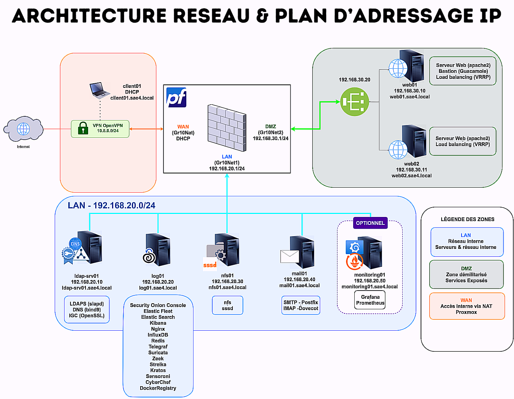
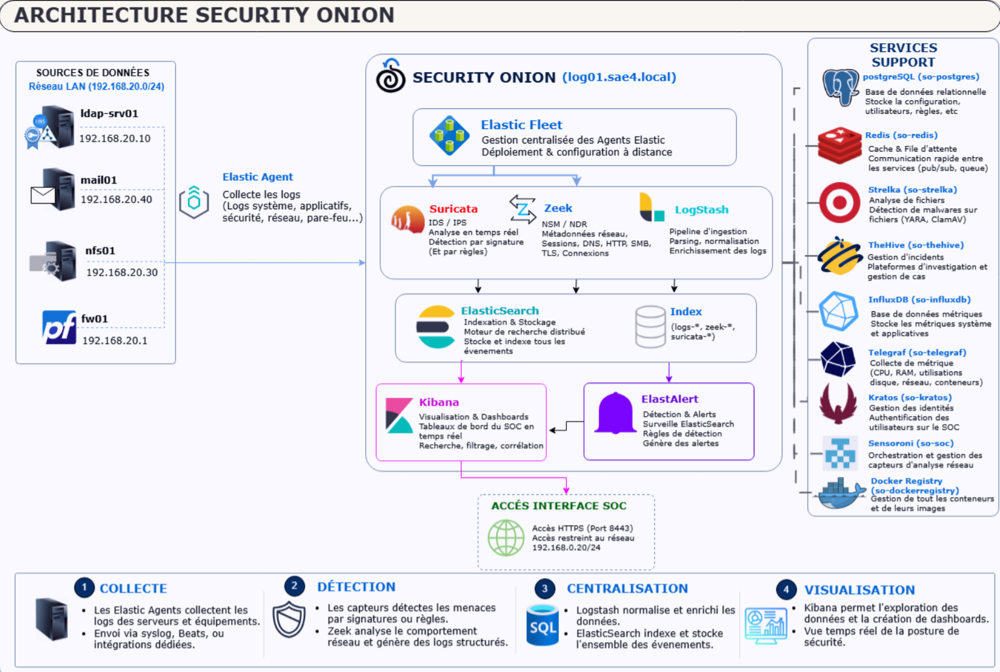
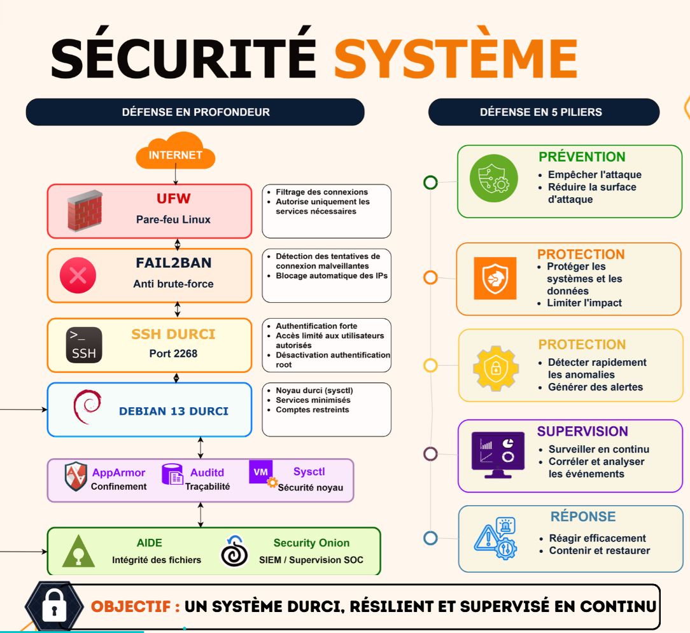

Sécuriser un système d'information
Conception et déploiement d'une infrastructure complète et durcie.
- Cadre
- BUT R&T - parcours Cyber
- Équipe
- 3 étudiants
- Environnement
- Proxmox VE
- Statut
- Terminé
01En résumé
Objectif
Sécuriser un SI de bout en bout : filtrage, authentification centralisée, chiffrement, accès distant contrôlé et détection.
Ma contribution
Déploiement en trinôme des briques réseau et services : pfSense, annuaire LDAP/DNS/PKI, NFS, messagerie, web, bastion.
Résultat
Socle déployé et fonctionnel (pare-feu, LDAP, NFS, mail, web, Guacamole) ;
02Le projet
L'objectif est de sécuriser un système d'information en mettant en oeuvre une infrastructure complète et durcie, combinant équipements spécialisés, services réseau sécurisés et outils cryptographiques. L'architecture déployée comprend :
- Pare-feu pfSense : routage, filtrage, VPN OpenVPN et proxy authentifiant (Squid).
- Annuaire OpenLDAP + DNS Interne + IGC (Debian) pour l'authentification centralisée, couplé à un DNS BIND9 et à une infrastructure de gestion de clés (IGC).
- Services sécurisés : partage NFS avec PAM/LDAP, messagerie Postfix + Dovecot en TLS, serveurs web Apache2 en haute disponibilité.
- Bastion Apache Guacamole pour l'accès distant, avec authentification LDAP et journalisation.
- Supervision Security Onion Solution de supervision à grande échelle avec SIEM, EDR, métriques système, télémetrie.
03Plan d'adressage
L'infrastructure est virtualisée sur Proxmox et répartie en trois zones réseau : LAN 192.168.20.0/24 (serveurs internes), DMZ 192.168.30.0/24 (services exposés) et WAN (DHCP Proxmox).
| VM | Zone | IP | Rôle |
|---|---|---|---|
| fw01 | WAN / LAN / DMZ | 192.168.20.1 - 192.168.30.1 | pfSense : pare-feu, routage, OpenVPN, Squid |
| ldap-srv01 | LAN | 192.168.20.10 | LDAP, DNS (BIND9), IGC |
| log01 | LAN | 192.168.20.20 | Security Onion : SIEM / IDS (Suricata, Zeek), logs centralisés |
| nfs01 | LAN | 192.168.20.30 | Partage NFS + authentification PAM/LDAP |
| mail01 | LAN | 192.168.20.40 | Postfix (SMTP) + Dovecot (IMAP) en TLS |
| web01 | DMZ | 192.168.30.10 | Reverse proxy HTTPS + bastion Guacamole |
| web02 | DMZ | 192.168.30.11 | Backend Apache2 (répartition de charge) |
| client01 | WAN | DHCP | Poste nomade : tests VPN et services |
04Démarche
- Planification : définition des zones LAN / DMZ / WAN, plan d'adressage et liste des services.
- Durcissement de base : Création des VM Proxmox, installation de Debian, configuration initiale, mise à jour et durcissement des systèmes puis création des templates.
- Coeur de réseau : pfSense (pare-feu, routage, VPN, proxy) puis serveur LDAP/DNS/IGC, dont dépendent tous les autres services.
- Services internes : NFS avec PAM/LDAP, messagerie Postfix/Dovecot en TLS, serveurs web Apache2.
- Accès distant : Bastion Guacamole intégré au LDAP et VPN OpenVPN pour les postes nomades.
- Supervision : déploiement de Security Onion et centralisation des journaux.
- Tests : validation fonctionnelle, contrôle des politiques de sécurité et simulation d'accès depuis un client nomade.
05Technologies
- pfSense
- Pare-feu, routage, VPN OpenVPN, proxy Squid avec authentification LDAP.
- LDAP + IGC
- Annuaire OpenLDAP, certificats racine / serveur / client, TLS.
- Services réseau
- BIND9, NFS + PAM/LDAP, Postfix (SMTPS), Dovecot (IMAPS), Apache2 (HTTPS).
- Haute disponibilité
- Répartition de charge web derrière un reverse proxy.
- Security Onion
- Stack Elastic + Zeek NSM + Suricata et collecte centralisée des journaux.
- Cryptographie
- Certificats, LDAPS, SMTPS, IMAPS, HTTPS.
- Debian
- Système de l'ensemble des serveurs, fail2ban, AIDE, ufw, AppArmor.
- Proxmox VE
- Virtualisation de toute l'infrastructure.
06Galerie



06Compétences BUT mobilisées (Apprentissage Critique)
AC24.01CyberBonnes pratiques et recommandations de cybersécurité
Application des préconisations ANSSI pour le durcissement des équipements, la configuration des services et la gestion des accès.
AC24.02CyberOutils fondamentaux de sécurisation
Pare-feu, VPN, proxy, bastion et détection d'intrusion.
AC24.03CyberSécuriser les services
Chiffrement TLS des services, authentification centralisée (LDAP, PAM) et durcissement des configurations.
AC24.04CyberChoisir les outils cryptographiques adaptés
Déploiement d'une IGC : certificats racine, serveur et client pour TLS et l'authentification VPN.
AC24.05CyberConnaître les différents types d'attaque
Analyse des vecteurs d'attaque (réseau, services, authentification) et contre-mesures adaptées.
AC25.01CyberAdministrer les protections contre les logiciels malveillants
Security Onion, AIDE, et règles de filtrage pour détecter et bloquer les activités malveillantes.
07Bilan
Ce que j'en retiens
Mettre en pratique le durcissement et la sécurité par défaut, intégrer des services à un annuaire LDAP et comprendre le rôle central d'une PKI pour l'authentification et le chiffrement. La gestion des zones et des règles pfSense a renforcé ma compréhension des politiques de filtrage.
Avec du recul
Nous avons eu 16/20 sur cette SAE car notre présentation a eu quelques lacunes, notamment des problèmes liés aux diagrammes qui apparaissaient flous. Si c'était à refaire, je pense que j'assurerais la partie communication et de faire des tests de présentation avant cette d'officiel. J'aurais aussi bien voulu faire la machine avec les services Grafana et Prometheus (monitoring01).